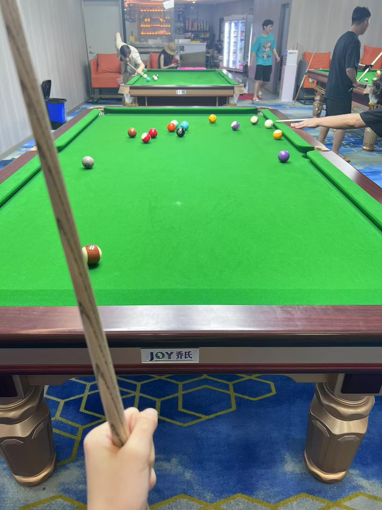

Venci个人网页
凡事发生皆利于我.

扫码了解我吧~

台球
Billiard是球类运动项目之一。是运动员在台球桌上用球杆通过按照一定的规则击打主球,使其撞击目标球的一项体育休闲项目。
 菜但爱玩
菜但爱玩

探店拍照
即前往某个商家店铺,根据其店面装修风格拍摄相应的照片,并给出自己的评价。

美食
作为一个美食爱好者，我认为美食不仅仅是满足口腹之欲的工具，更是一种能够带来快乐和幸福感的享受。通过品尝不同地域的美食、不同类型的美食，以及自己动手制作美食，我们能够拓宽视野，增长知识，丰富生活。美食是一种文化，是一种艺术，是一种生活方式。作为一个热爱美食的人，我将继续探索美食的世界，享受其中的乐趣和满足。无论是在餐厅里品尝美食，还是在家中烹饪美食，我都会用心去体验和分享美食的魅力。
品酒
品酒如 品茶，只怀风月。 通常品尝酒的方法不外乎 视觉 、嗅觉及味觉的观察，与品茶有异曲同工之理。